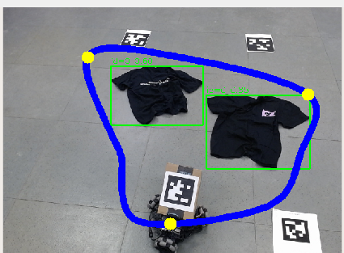
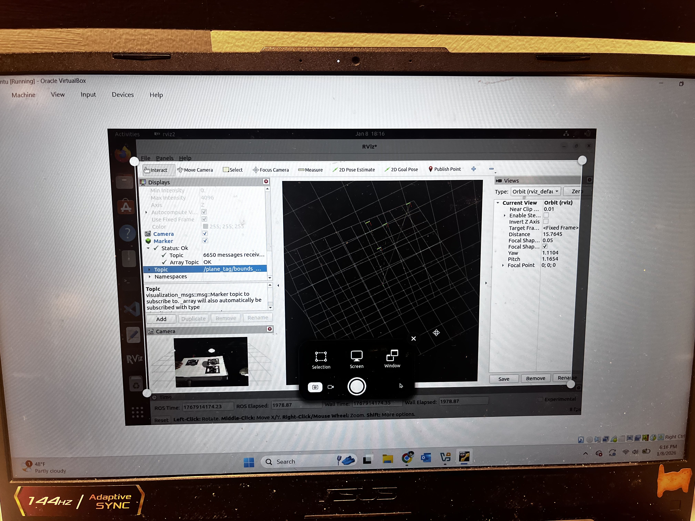
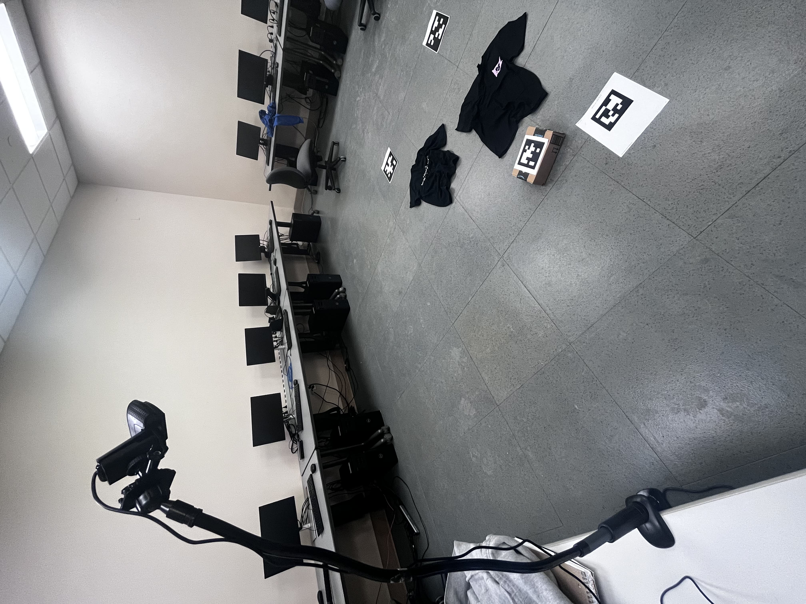
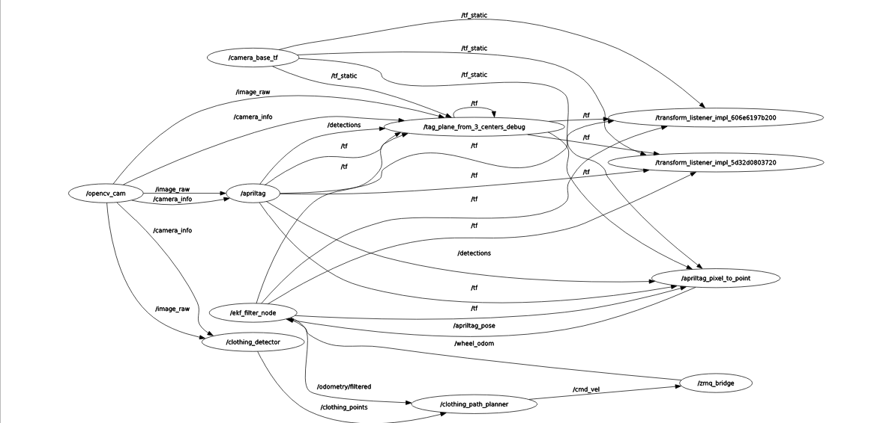

ROS system uses YOLOv8 model to identify and bound clothing, and then traces a path around them that the robot follows.

This project would have taken me half the time it did if I had a RGB-Depth camera. Alas, I am broke, so I opted for a workaround with a regular RBG camera. Using three apriltags to serve as reference points, I modeled a plane that would represent the floor of my room. Below is a sort of visualization. The flat plane is the camera frame, and the plane intersecting it is the representation from the apriltags.

The goal with this: take any pixel from the camera image and convert it to (x,y,z) coordinates where the z=0 plane is represented by the plane created by the apriltags. So in this case, it would be the floor. I modeled this as a ROS2 service that could easily be pinged in other nodes. I then used a YOLOv8 deep learning model to identify and bound the clothing within a rectangle created by the three AprilTags. The ROS2 service makes these points really easy to work with in the 2D plane my robot will manuever in. You can see why this service was vital for this project; without it, SLAM-less localization would have been quite difficult. Quick example:
I then used the starting point of the robot (indicated by another AprilTag) to trace through all of these clothing points via a Catmull-Rom spline to create a path, such as below.
Next came the state estimation. Experimentally finding the LeKiwi's process noise/covariance via encoder data, fused with the covariance and measurements from the AprilTag allowed me a pretty decent position estimate. The ROS2 ekf_localization node did most of the heavy lifting here. I chucked the output and the path into a Stanley controller, and the whole system came together. P.S. I communicated with the LeKiwi with their ZMQ protocol, which allowed me to control the robot directly from ROS2 instead of LeKiwi's system. Here was my full setup.

This was the final rqt_graph (basically, how everything came together). It looks a little complicated but it's mostly just throwing around the /tf topic to all my nodes.
